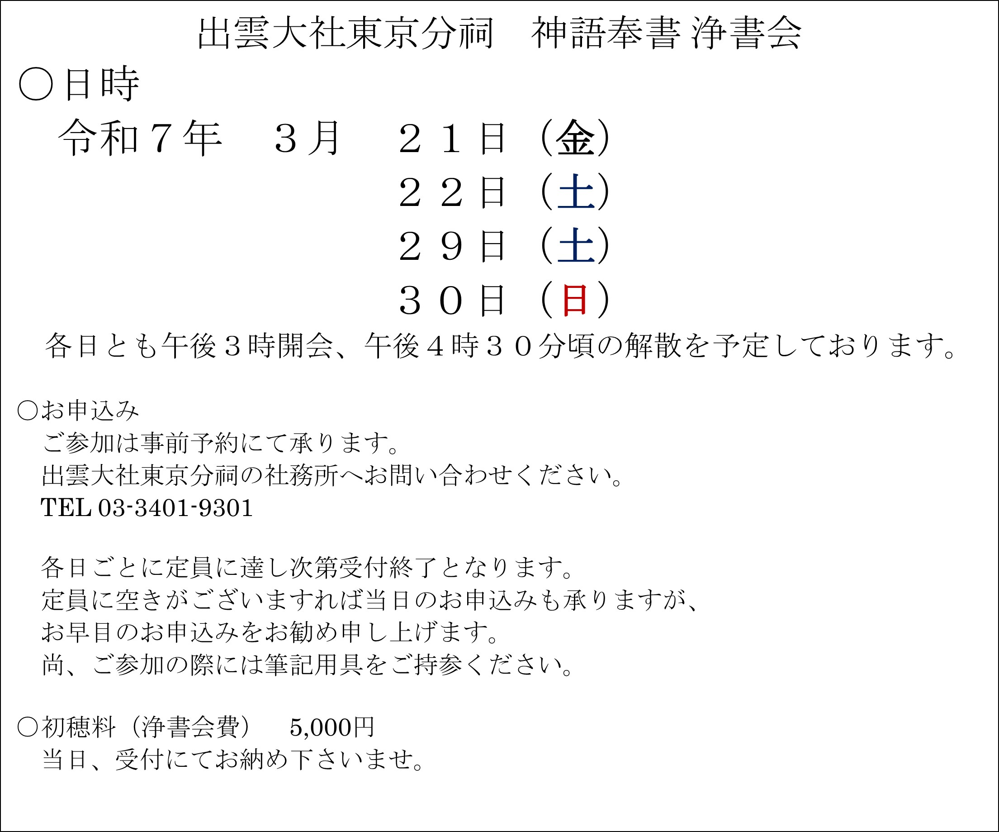
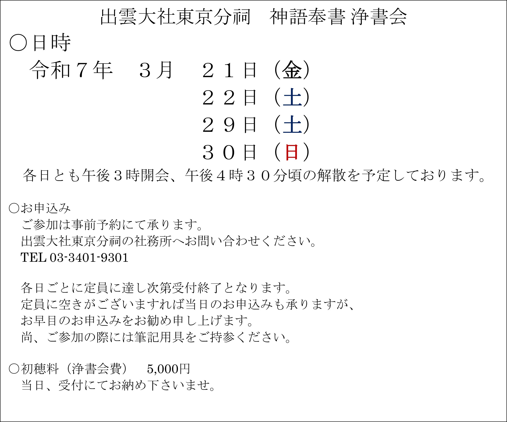
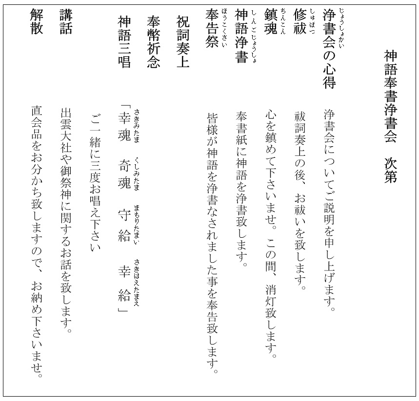
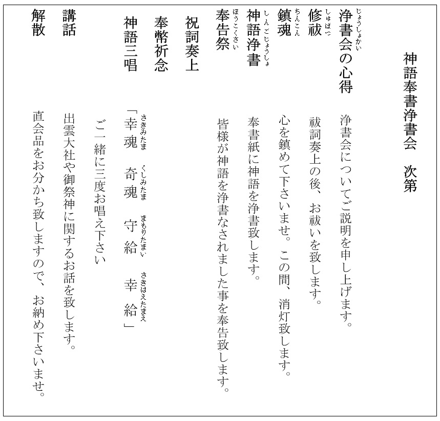

神語奉書浄書会のご案内
投稿日: 2025.1.19
 

 


新 着 情 報
神語奉書 浄書会
のご案内
大神様の御恵みによって生かされ、ご先祖様から受け継いだ
を宿す我々は、常に
からの慈愛に寄り添われて日々の暮らしの中に在ります。
新玉の年、春分の日を越え陽気の芽吹き始める3月下旬に「
」の神語の祈りに思いを深め、心清々しく和楽の恵みに結ばれますよう浄書会のご案内を申し上げます。
皆様が浄書なされました神語奉書は大切にお預かりして、宗祠と仰ぎます島根県の出雲大社にて、神楽殿の御神前へお供え致します。
神前にお供えされた後は、出雲大社神楽殿の神殿至近にございます「神語奉書奉納殿」へお納め致しまして、永く大切に保管されます。
お問い合わせ
出雲大社東京分祠
〒106-0032 東京都港区六本木7-18-5
TEL: 03-3401-9301
受付時間: 午前9時～午後5時